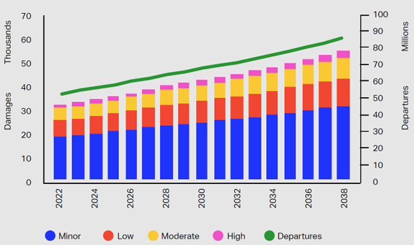

Our Mission
Every year, aircraft ground handling incidents lead to substantial direct and indirect costs. The trend is concerning, with increasing apron activity and tighter turnarounds driving risk. Steer-Clear aims to reduce these incidents with a retrofit solution that improves situational awareness at the stand and during docking — without disrupting existing operations.

Our Solution
- Modular retrofitting: upgrade the current fleet with minimal downtime.
- Cost-effective: pragmatic design for broad adoption across vehicle types.
- Distance awareness: timely cues to avoid contact with aircraft and stand infrastructure.
- Docking assistance: clearer, faster approaches under operational pressure.
- Simple to use: intuitive signals that reduce cognitive load for operators.
Meet the Team
Alina Krüger
CEO
B.Sc. Aeronautical Engineering (Hons.)
M.Sc. Technology-based Entrepreneurship (student)
Dutch Aerospace Awards 2024: André Kuipers Space Prize
Maximilian Schimmel
CTO
B.Sc. Aeronautical Engineering (Hons.)
M.Sc. All-Electric Propulsion Systems (student)
Dutch Aerospace Awards 2024: André Kuipers Space Prize